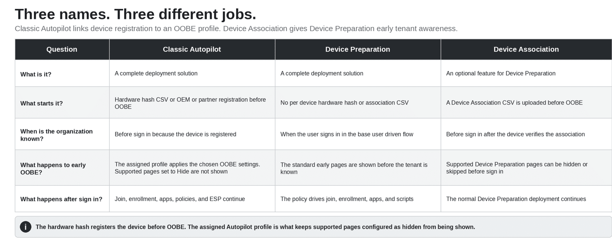
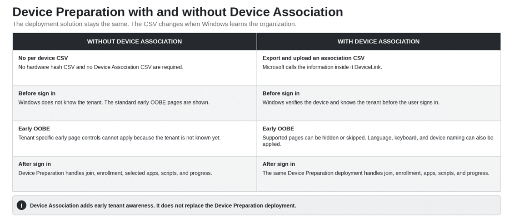
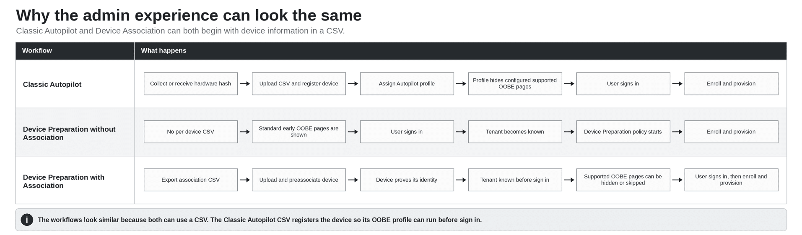
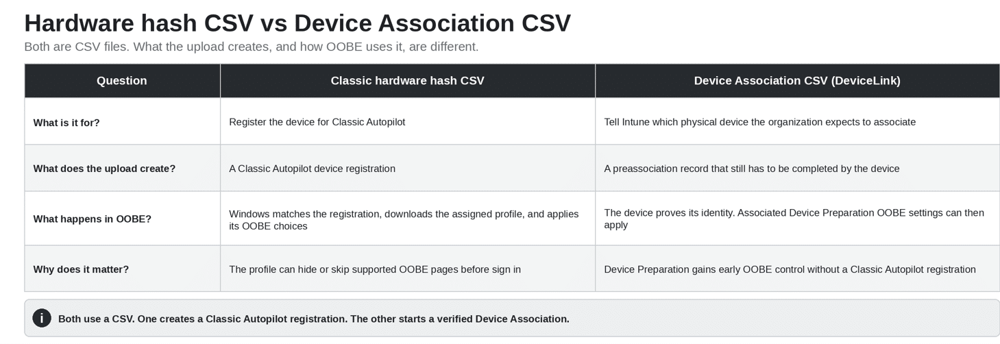
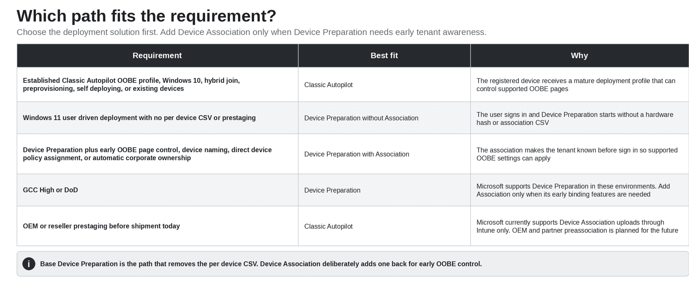

Autopilot Device Preparation with Device Association… is that not basically Classic Autopilot again? That question came up on Reddit. And when you put the two admin workflows side by side, I understand why.
Classic Autopilot, often called APv1: collect the hardware hash, upload the CSV, register the device, assign an Autopilot deployment profile, and provision it.
Autopilot Device Preparation in combination with Device Association: export the device association information, upload the CSV, associate the device with the organization, and provision it.
So yes. From the admin desk, both can start with device information in a CSV. In Autopilot V1, that CSV carries the hardware hash used to register the device. In Device Association, the CSV carries the identity used to create the association. The important difference is what each upload unlocks before sign-in.
Classic Autopilot and Device Preparation are the deployment solutions. Device Association is an “optional” feature that gives Device Preparation early knowledge of the organization.
The OOBE is the Windows setup shown before the desktop. Autopilot V1 was built around two linked steps: register the device before sign-in, then download an assigned deployment profile that configures OOBE. When a supported page is configured to be hidden, the user does not see that page.
{kind=link}

Autopilot V1 uses the hardware hash CSV to deliver the OOBE profile
With Classic Autopilot, the physical device is registered before deployment. For a manual registration, IT collects the 4K hardware hash and uploads it in a CSV. An OEM or partner can also register the device without IT collecting that CSV.
That registration lets Windows recognize the device as soon as it reaches OOBE and has internet access. Windows downloads the assigned Autopilot deployment profile before the user signs in.
The deployment profile is what shapes the Classic Autopilot OOBE experience. It can hide the Microsoft license terms and privacy pages, hide the change account option, set the language, automatically configure the keyboard and skip the keyboard page when the requirements are met, choose the user account type, and apply a device name. The supported pages configured as hidden are not shown to the user.
That does not mean every Windows setup page disappears. It means the profile decides which supported OOBE pages are shown or skipped. After that, Microsoft Entra join, Intune enrollment, apps, policies, and the Enrollment Status Page continue.
Autopilot Device Preparation removes the hardware hash and registration step
Autopilot Device Preparation starts differently. There is no Classic Autopilot registration, no hardware hash CSV, and no Device Association CSV required for each device.
The user starts the Windows 11 device and sees the standard early OOBE pages. Windows does not yet know which organization the device belongs to. The associated device controls for language, keyboard, license terms, privacy, change account options, and device naming therefore do not apply in the base flow.
When the user signs in with the work account, Windows learns the organization. The Device Preparation policy can then start Microsoft Entra join, Intune enrollment, the selected apps, the selected PowerShell scripts, and the deployment progress experience.
That is the main operational advantage of base Device Preparation: no per device CSV and no prestaging.
| The Classic Autopilot chain Hardware hash CSV or OEM registration makes the device known before sign in. Windows then downloads the assigned Autopilot profile. Supported OOBE pages configured as hidden are not shown to the user. |
The tradeoff is equally simple. The organization becomes known too late to hide or change the early OOBE pages the user already completed.
{kind=link}

So what does Autopilot Device Preperation – Device Association actually add?
Device Association adds early organization awareness to Device Preparation. It gives Windows a trusted relationship between the physical device and the organization before enrollment.
IT exports a small Device Association CSV from Windows and uploads it to Intune. Microsoft calls the information inside that file DeviceLink. The simple explanation is that it identifies the physical device the organization expects.
The upload creates a preassociation, not a Classic Autopilot registration. When the device connects during OOBE, it proves that it is the expected device by using its TPM.
After verification, Windows stores the organization relationship in UEFI. Windows can now know the organization before the user signs in.
If a Device Preparation policy is assigned to the associated device, its supported OOBE settings can now apply early. Windows can hide the license and privacy pages, hide the change account option, set the language, automatically configure the keyboard when the requirements are met, and apply a device name.
After that, Device Preparation still handles Microsoft Entra join, Intune enrollment, apps, scripts, and deployment progress. Device Association does not replace Device Preparation. It only moves the organization awareness earlier.
Association also marks the device as corporate owned and allows a Device Preparation policy to be assigned directly to the device. If both a device policy and a user policy apply, the device policy takes precedence.
Why the Reddit comparison still feels correct
Because Device Association puts a per device CSV back into the process.
Classic Autopilot can use a hardware hash CSV collected by IT, but an OEM or partner can also register the device. When IT imports manually through Intune, Microsoft allows up to 500 devices in one CSV.
Device Association is newer. The current Intune flow accepts one device per exported CSV. Microsoft also documents a QR option for custom applications that use Microsoft Graph.
Microsoft currently says OEM, reseller, and partner preassociation before shipment is not supported yet. Device Association uploads are currently supported through Intune, with OEM and partner support planned for the future.
So today, Device Association is not automatically a labor saving improvement. If IT handles every device manually, it can feel very similar to Classic Autopilot, or even like more work(except it they use this wonderful Script). The benefit is early OOBE control, direct device targeting, corporate ownership, and a verified device relationship.
{kind=link}

Hardware hash CSV vs Device Association CSV
This is what makes the two workflows look almost identical from the admin desk.
The Classic Autopilot CSV contains the hardware hash. Uploading it registers the device in the Classic Autopilot service. That registration lets Windows download the assigned deployment profile during OOBE. The profile then applies the chosen OOBE settings, and supported pages configured as hidden are not shown before sign in.
The Device Association CSV contains a different device identity. Uploading it records that the organization expects this physical device, but the device must still prove that identity before the association is complete. Once associated, Device Preparation can use the OOBE settings reserved for associated devices.
Both use a CSV. One creates a Classic Autopilot registration and retrieves a deployment profile. The other starts a Device Association that gives Device Preparation early tenant awareness. That is the real difference..
{kind=link}

So what problem is Device Association solving?
Autopilot Device Preparation removes the hardware hash and per device CSV. Device Association is not solving that CSV problem because choosing Association deliberately adds a CSV back.
Device Association solves a different problem: early organization awareness and early OOBE control.
Device Preparation removed the requirement to register every device with Classic Autopilot. That is simpler, but Windows normally learns the organization only when the user signs in. Device Association adds that knowledge before sign in without creating a Classic Autopilot registration.
That is why Device Association matters when you want Device Preparation but also need supported OOBE pages hidden or skipped, a device name before enrollment, direct device policy assignment, automatic corporate ownership, or a verified device relationship before enrollment.
Why Autopilot Device Preparation is a separate architecture
Microsoft calls Device Preparation a rearchitecture of Windows Autopilot. The clearest difference is not the URL list. It is how Windows and the service identify the device and decide what can happen before sign in.
Classic Autopilot is built around a device registration and an assigned deployment profile. Microsoft’s current Classic Autopilot requirements list login.live.com and ztd.dds.microsoft.com. In the classic flow I traced, Windows uses login.live.com to obtain the X Device Token and then uses that token with ztd.dds.microsoft.com to retrieve the assigned profile.
That is the long standing Classic Autopilot contract: recognize the registered device, return its profile, and use that profile to shape OOBE.
Device Preparation does not require a Classic Autopilot registration. In the base flow, the user’s work account identifies the organization. Device Association adds an optional relationship before sign in so Windows can identify the organization early, verify the physical device, and retrieve the OOBE settings assigned to that associated device.
Which path should you use?
{kind=link}

One coexistence rule is worth remembering. Microsoft states that if a device is registered for Classic Autopilot but is not associated, the Classic Autopilot deployment takes precedence. If that same device is associated, Device Association takes precedence, and the Autopilot Device Preparation deployment runs.
The real answer
Is Autopilot Device Preparation with Device Association really different from Classic Autopilot?
From the admin desk, not really. The workflows can look surprisingly similar because Classic Autopilot can use a hardware hash CSV and Device Association uses an association CSV.
Underneath, they do different jobs. Classic Autopilot uses the hardware hash registration to download an assigned deployment profile before sign in. That profile applies the configured OOBE behavior and prevents supported pages set to Hide from being shown. Autopilot Device Preparation (without device association) removes the per device CSV but shows the standard early OOBE pages until the user identifies the tenant. Autopilot Device Association adds a per device CSV back so Device Preparation can know the tenant early and apply the OOBE settings reserved for associated devices.
| The simple version Classic Autopilot = hardware hash or partner registration, then an Autopilot profile that controls supported OOBE pages. Autopilot Device Preparation = no per device CSV, standard early OOBE, then deployment after the user signs in. Device Preparation with Device Association = association CSV, early tenant recognition, supported OOBE control, then the same Device Preparation deployment. |